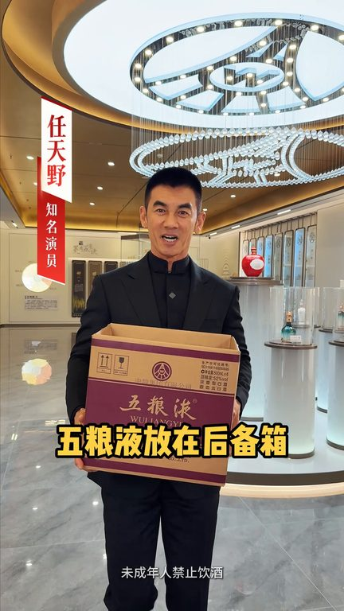
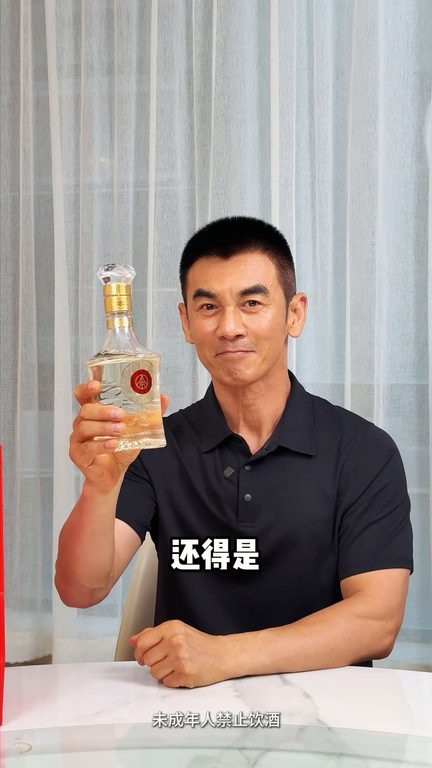
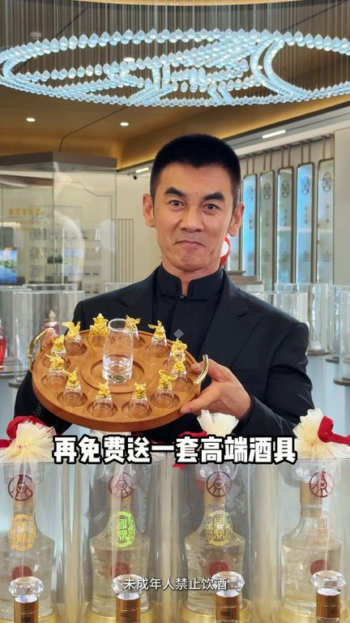
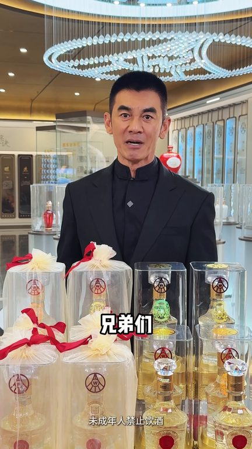

TOP 1 · 代表素材深度拆解
核心放量 稳健
视频为原始素材 HTTPS 链接；点击后加载，建议在网络环境良好时播放。
26.9万素材消耗
2.43%CTR
45.0%类目消耗占比
-0.20pp较类目均值
表现判断
该素材是类目内第 1 名，属于“核心放量”；CTR 低于类目均值。消耗体现承接规模，CTR 体现首屏与定向效率，两项应结合判断，不能仅以单指标下结论。
表达标签
口播三段式证据
开场钩子五粮叶放在后杯箱求人办事心不慌谈生意纵人情就选它要是自己微薰小着
中段论证又要大盘又要实惠还得是五粮叶先林生态国底这次五粮叶中付授权店周年庆五折充量这三瓶是你买的这三瓶是我送的两箱十二瓶再免费送一套高端酒剧
结尾转化又要大盘又要实惠还得是五粮叶先林生态国底这次五粮叶中付授权店周年庆五折充量这三瓶是你买的这三瓶是我送的两箱十二瓶再免费送一套高端酒剧我站在这给大家保证但凡收到货可我说的不一样的直接退不喜欢的直接退兄弟们抓紧下手
有效点
- 消耗占比 45.0% 说明具备投放承接能力，但 CTR 较类目均值低 0.20pp
- 口播包含明确到手机制或直播间指令，转化路径较完整
迭代动作
- 保留当前高效钩子，复制 3 个变量版本：人物、首句和首帧分别单变量测试
- 中段每 5–8 秒补一次画面变化或证据点，避免同景口播造成信息疲劳
- 促销口径与资质信息保持同屏可验证，结尾只保留一个明确行动指令
合规关注

钩子建立 · 1.2s

场景/问题展开 · 8.8s

卖点证据 · 20.3s

转化收口 · 27.9s
查看完整口播摘要
五粮叶放在后杯箱求人办事心不慌谈生意纵人情就选它要是自己微薰小着又要大盘又要实惠还得是五粮叶先林生态国底这次五粮叶中付授权店周年庆五折充量这三瓶是你买的这三瓶是我送的两箱十二瓶再免费送一套高端酒剧我站在这给大家保证但凡收到货可我说的不一样的直接退不喜欢的直接退兄弟们抓紧下手